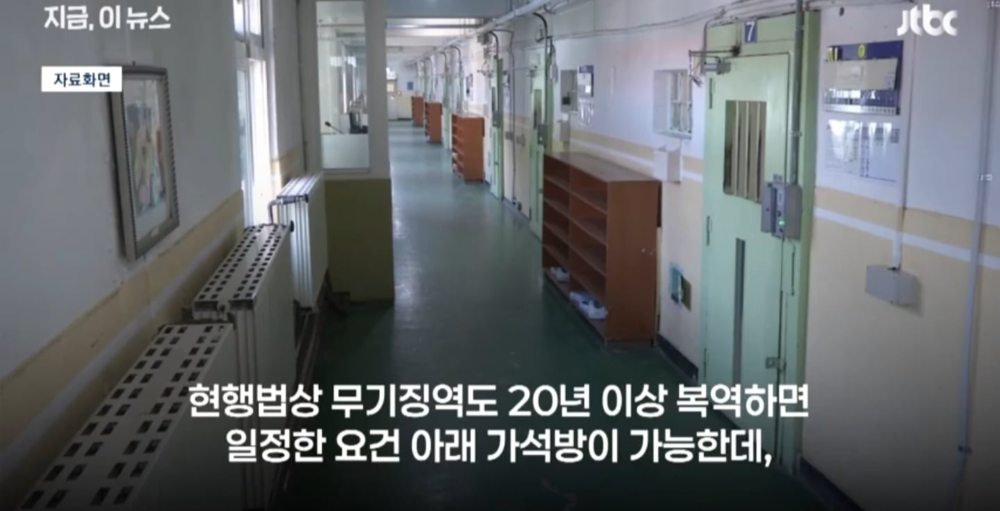
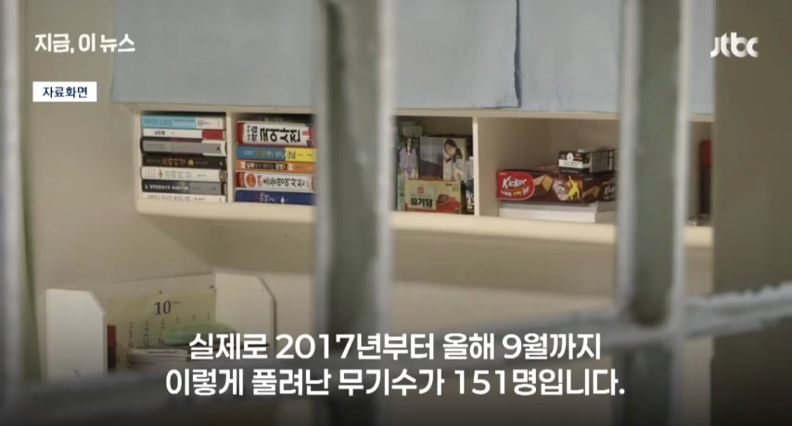
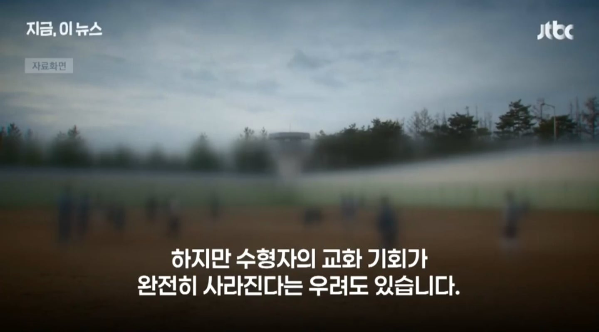
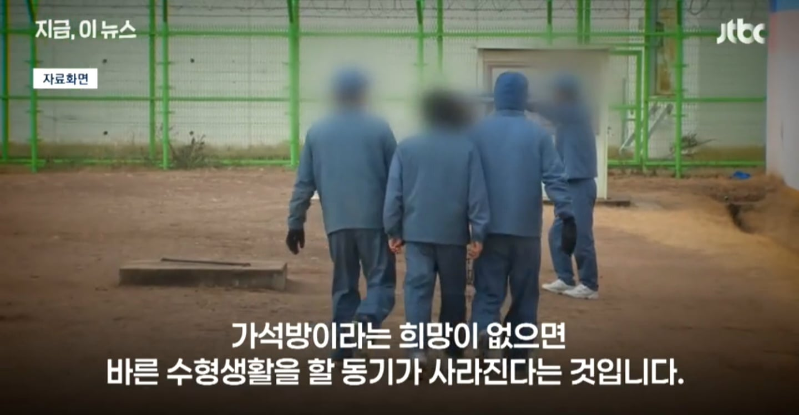

???: 우리동내에 무기수 전용 수형시설이
왠말이냐!!(피켓촛불시위하며)
바른 수형생활을 안하면 방망이로 찜질해주는게 맞긴 함
사형 폐지할수도 있다고는 보는데 그럼 종신형 즉 가석방 없는 무기징역도 추진해야지. 그리고 간혹 판결문에. 교화 가능성 없다고 법원피셜 인증 된 범죄자들 은 못나와야 정상이지.
응 아니야
잡범도 아니고 무기수한테 무슨 교화야
교화가 되긴 됩니꺼?
그 어떤 흉악범이라도 교화의 기회를 빼앗을 수는 없음
그게 인권이고 인간이 가져야할 가장 기본적인 권리임
흉악범 출소해서 니 가족 난도질해도 똑같은 말이 나올까나 ㅋ
꼭 논지 흐리는 사람들이 공통적으로 하는 소리가 니 가족을 언급하더라고
교화를 논할 때 가족의 안위를 걱정하게 되는 것은 당연지사임
교화가 성공하면 다행이겠지만 실패해서 누군가가 재범의 피해자가 되면?
그때가서도 피해자 앞에서 교화의 권리는 박탈할 수 없다고 당당하게 말할 수 있음?
애초에 교화의 권리를 재소자의 사회 복귀와 동일선상에서 생각하는 것도 웃김
재범률이 어쩌고, 범죄를 당할 확률이 저쩌고해도 그 확률을 뚫고 당하는 사람한텐 걍 100%임 ㅋㅋㅋ
교화의 기회도 좋은데 그게 안되는 경우가 있다는 것도 인정 좀 했으면 싶음

근데 그대로 놥두는게 오히려 교화의 기회를 안주는 거 아니야? 어떤 인간은 때리고 폭력을 행사해야만 짐승에서 사람의 윤리를 갖추는 경우가 있음. 그런 인간들이 존재하는 것을 부정할수는 없잖아?
저런건 그 교화의 기회를 여러번 받았는데도 계속 재범하는 사람이나 받는걸걸?
잡범도 5회면 사기수법만 더 강해질뿐
강력 범죄 예방효과이 있겠지. 돌고래 교도소같은거 어디 섬에다가 만들어놔야함
인생은 한번 뿐이야. 근데 한번 뿐인 남의 인생 조져놓고 교화를 바란다고? 지랄마.
바른 수형생활의 동기부여는 수형생활의 질로 해야지. 좆같이 굴면 단무지에 굳은밥만 먹이고 그나마도 사람새끼처럼 굴면 김치에 소금국까지는 허락하고.
무기징역 받을 정도의 중범죄자는 죽이지 못해서 살려두는건데 인간사회에 풀어놓으면 안됨
이미 올바르게 살 기회가 있었는데도 그러지 않았음. 심지어 무기수는 죄질부터 역겹고 추악함. 그런 씹새끼들이 참수당하지 않고 감옥안에서 올바르게 살아가는 기회를 받은 것만으로도 과분하다고 생각한다 나는
교화를 믿는 ㅅㄲ들은 걍 저능아임
교화될 놈이면 무기 받을 일을 안만들어
누가우려하냐 어떤씨발호로새끼가 우려를해
교화는 뭐 생활고 때문에 도둑질 하거나 정말 실수로 사람 죽이게 된 과실치사 같은 경우나 교화지
길거리에서 시민들 아묻따 칼찌 하거나 건물에 불질러서 사람십수명 죽게 만든 짐승은 교화가 아니라 평생 격리하는게 맞음
솔직히 사형 해서 뭐하노 노동교화형 만들어야 한다
금전범죄에 한해서 노동형은 안될려나 수당은 피해자에게 가고 다 깔때까지 노동형
N억 사기치고 n년 레퍼토리 많은데 피해금 다 깔때까지 수감으로 하면 안될라나
아직도 교화 타령하는 뻥신들이 있네...
걍 사형해야지. 교도소 자리도 없다면서
근데 가석방 없는 무기징역이면 사형이 더 낫지 않나
돈도 아끼고 좋은데
나도... 어차피 사회랑 영구격리인데 구지 세금으로 먹이고 재울필요있나 싶음
그러기인 인간수명이 너무김
아님 진짜 자력으로 먹고자게하든가
교화같은 소릴한다ㅋㅋㅋ
무기징역 받을정도 개새끼들한테 도대체 교화의 기회를 왜 줌? 씨발년들아
사람들이 대체로 반응하는 적당한 지지율 상승거리 찾은거고 뉴스를보던 개드립을 보던 효과는 상당해보이네. 근데 여태 교화위주로 갔던게 윗대가리가 호구병신이라 그랬던게 아니다
교화도 교화가 될 놈을 대상으로나 교화시켜야지
저중에 정신질환자로 분류되는 애들은 진짜 사회에 플어놓지마라 ㅡㅡ
바른수형생활이 안되는게 문제면 사형하자
무기징역 말고 사형 때리자
사실상 사형 안하듯이 법은 그대로 두고 가석방 안해주면 되는거지
품행이 나빠지면
"그동안 가석방 포인트 쌓여서 금방 가석방 될거 같았는데 포인트 다 까먹었네요." 하고 희망고문도 하고
범죄자 인권 따지면 범죄자를 가두는거 부터가 문제아닌가?
처벌하는것 자체가 인권을 무시하는건데 빵에 들어가면 왜 인권을 챙겨주는거지? 너무 모순이다.
교화란 없어..
무기징역 받는 놈들한텐 더더욱..
전쟁후 씹창난 개막장 사회도 아니고 21세기 대한민국 교육, 사회 환경에서 무기징역 선고를 받을만큼 흉악한 범죄를 저질렀다는건 그 자체로 교화의 가능성이 0% 라는 얘기라고 생각함. 그럼에도 불구하고 열악한 환경에서 성장했을 수 있다고? 이미 그거 형량에 다 반영함. 그걸 뚫고 뚫어서 무기징역이면 그냥 살처분 해야할꺼 집행 못하니 무기때린거지 뭐.
일정 수준 넘어가면 교화는 감옥 안에서 하는게 맞을 수도....
그거 아님 사형밖에 없잖아
그냥 미국 관타나모 수형소처럼 무기수 전용 수형시설 만들면 안되나